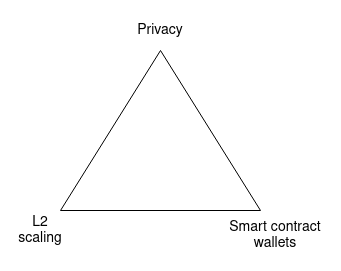
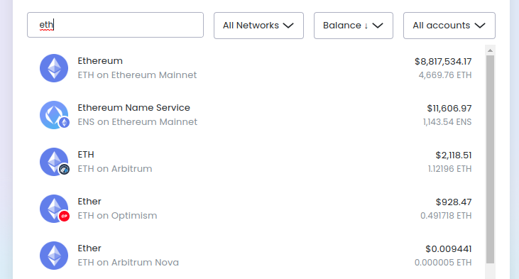
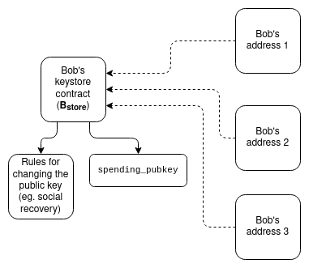
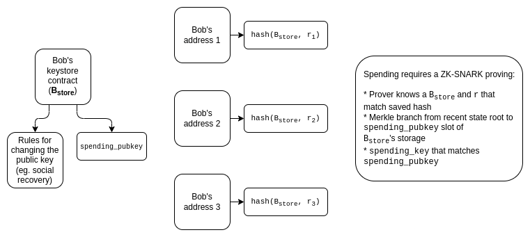
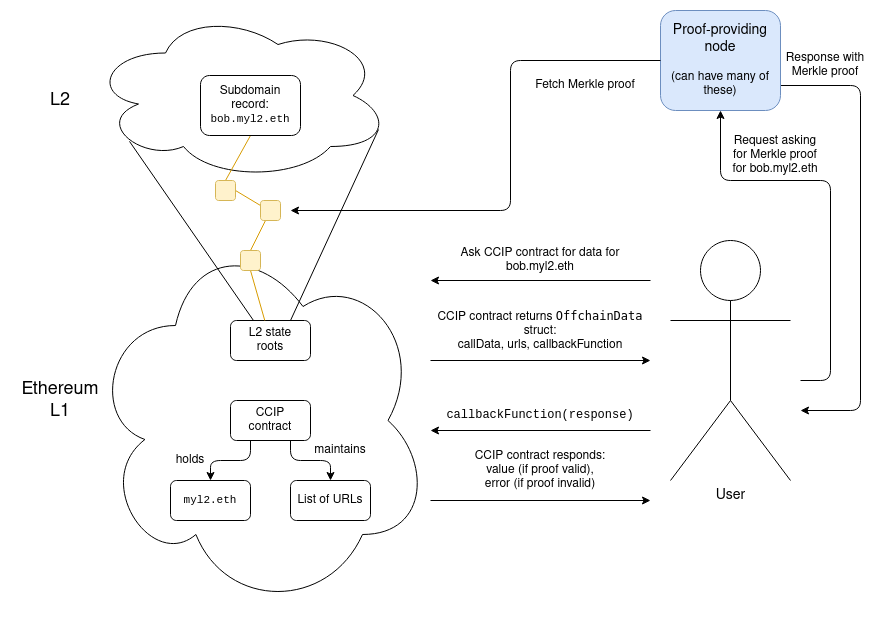
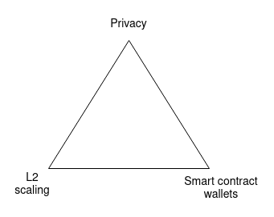
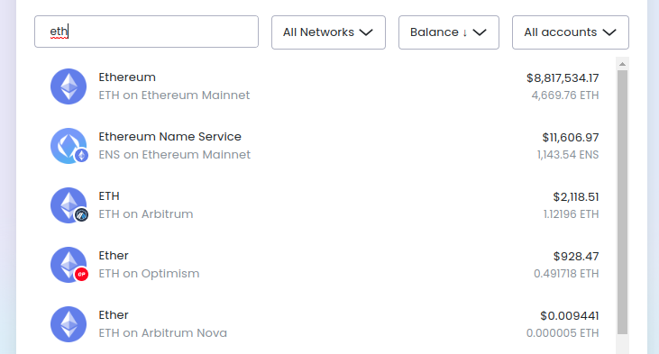
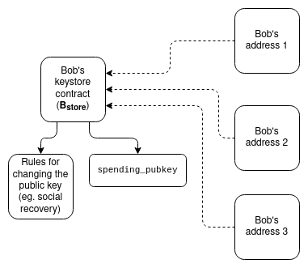
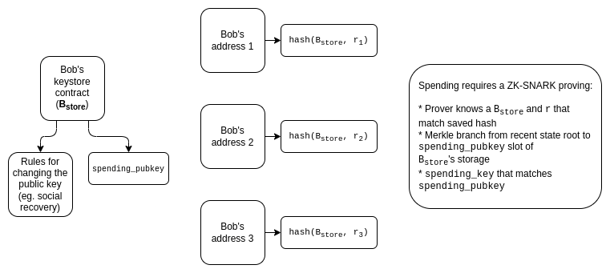
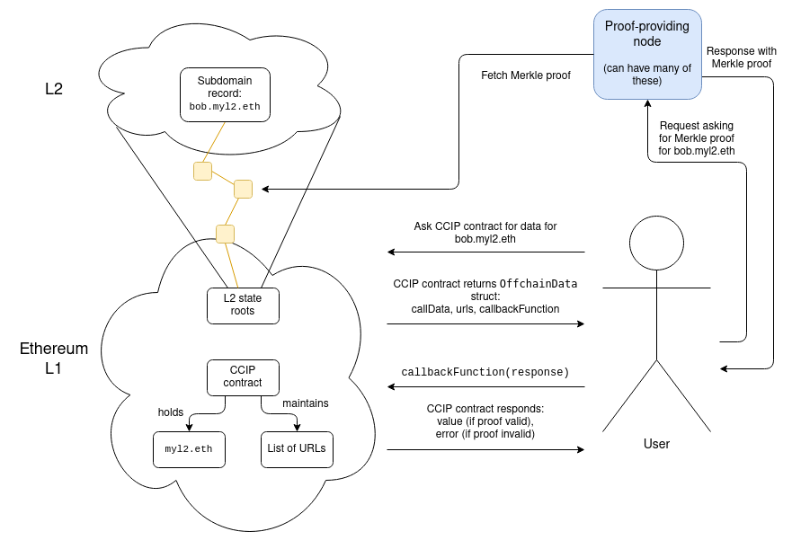

The Three Transitions
2023 Jun 09
See all posts
The Three Transitions
Special thanks to Dan Finlay, Karl Floersch, David Hoffman, and
the Scroll and SoulWallet teams for feedback and review and
suggestions.
As Ethereum transitions from a young experimental technology into a
mature tech stack that is capable of actually bringing an open, global
and permissionless experience to average users, there are three major
technical transitions that the stack needs to undergo, roughly
simultaneously:
- The L2 scaling transition - everyone moving
to rollups
- The wallet security transition - everyone moving to
smart contract
wallets
- The privacy transition - making sure
privacy-preserving funds transfers are available, and making sure all of
the other gadgets that are being developed (social recovery,
identity, reputation) are privacy-preserving

The ecosystem transition triangle. You can only pick 3
out of 3.
Without the first, Ethereum fails because each transaction costs
$3.75 ($82.48 if we have another bull run), and every product aiming for
the mass market inevitably forgets about the chain and adopts
centralized workarounds for everything.
Without the second, Ethereum fails because users are uncomfortable
storing their funds (and non-financial assets), and everyone moves onto
centralized exchanges.
Without the third, Ethereum fails because having all transactions
(and POAPs, etc) available publicly for literally anyone to see is far
too high a privacy sacrifice for many users, and everyone moves onto
centralized solutions that at least somewhat hide your data.
These three transitions are crucial for the reasons above. But they
are also challenging because of the intense coordination involved to
properly resolve them. It's not just features of the protocol that need
to improve; in some cases, the way that we interact with Ethereum needs
to change pretty fundamentally, requiring deep changes from applications
and wallets.
The
three transitions will radically reshape the relationship between
users and addresses
In an L2 scaling world, users are going to exist on lots of L2s. Are
you a member of ExampleDAO, which lives on Optimism? Then you have an
account on Optimism! Are you holding a CDP in a stablecoin system on
ZkSync? Then you have an account on ZkSync! Did you once go try
some application that happened to live on Kakarot? Then you have an
account on Kakarot! The days of a user having only one address will be
gone.

I have ETH in four places, according to my Brave Wallet view. And
yes, Arbitrum and Arbitrum Nova are different. Don't worry, it will get
more confusing over time!
Smart contract wallets add more complexity, by making it much
more difficult to have the same address across L1 and the
various L2s. Today, most users are using externally owned
accounts, whose address is literally a hash of the public key that
is used to verify signatures - so nothing changes between L1 and L2.
With smart contract wallets, however, keeping one address becomes more
difficult. Although a lot of work has been done to try to make
addresses be hashes of code that can be equivalent across networks, most
notably CREATE2
and the ERC-2470
singleton factory, it's difficult to make this work perfectly. Some
L2s (eg. "type 4 ZK-EVMs")
are not quite EVM equivalent, often using Solidity or an
intermediate assembly instead, preventing hash equivalence. And even
when you can have hash equivalence, the possibility of wallets changing
ownership through key changes creates other
unintuitive consequences.
Privacy requires each user to have even more
addresses, and may even change what kinds of addresses we're
dealing with. If stealth address proposals
become widely used, instead of each user having only a few addresses, or
one address per L2, users might have one address per
transaction. Other privacy schemes, even existing ones such as
Tornado Cash, change how assets are stored in a different way: many
users' funds are stored in the same smart contract (and hence at
the same address). To send funds to a specific user, users will need to
rely on the privacy scheme's own internal addressing system.
As we've seen, each of the three transitions weaken the "one
user ~= one address" mental model in different ways, and some
of these effects feed back into the complexity of executing the
transitions. Two particular points of complexity are:
- If you want to pay someone, how will you get the information
on how to pay them?
- If users have many assets stored in different places across
different chains, how do they do key changes and social
recovery?
The
three transitions and on-chain payments (and identity)
I have coins on Scroll, and I want to pay for coffee (if the "I" is
literally me, the writer of this article, then "coffee" is of course a
metonymy for "green tea"). You are selling me the coffee, but you are
only set up to receive coins on Taiko. Wat do?
There are basically two solutions:
- Receiving wallets (which could be merchants, but also could just be
regular individuals) try really hard to support every L2, and
have some automated functionality for consolidating funds
asynchronously.
- The recipient provides their L2 alongside their address, and the
sender's wallet automatically routes funds to the destination L2 through
some cross-L2 bridging system.
Of course, these solutions can be combined: the recipient provides
the list of L2s they're willing to accept, and the sender's
wallet figures out payment, which could involve either a direct send if
they're lucky, or otherwise a cross-L2 bridging path.
But this is only one example of a key challenge that the three
transitions introduce: simple actions like paying
someone start to require a lot more information than just a 20-byte
address.
A transition to smart contract wallets is fortunately not a large
burden on the addressing system, but there are still some technical
issues in other parts of the application stack that need to be worked
through. Wallets will need to be updated to make sure that they do not
send only 21000 gas along with a transaction, and it will be even more
important to ensure that the payment receiving side of a wallet
tracks not only ETH transfers from EOAs, but also ETH sent by smart
contract code. Apps that rely on the assumption that address ownership
is immutable (eg. NFTs that ban smart contracts to enforce
royalties) will have to find other ways of achieving their goals. Smart
contract wallets will also make some things easier - notably,
if someone receives only a non-ETH ERC20 token, they will be
able to use ERC-4337
paymasters to pay for gas with that token.
Privacy, on the other hand, once again poses major challenges that we
have not really dealt with yet. The original Tornado Cash did not
introduce any of these issues, because it did not support internal
transfers: users could only deposit into the system and withdraw out of
it. Once you can make internal transfers, however, users will
need to use the internal addressing scheme of the privacy system. In
practice, a user's "payment information" would need to contain both (i)
some kind of "spending pubkey", a commitment to a secret that the
recipient could use to spend, and (ii) some way for the sender to send
encrypted information that only the recipient can decrypt, to help the
recipient discover the payment.
Stealth address
protocols rely on a concept of meta-addresses,
which work in this way: one part of the meta-address is a blinded
version of the sender's spending key, and another part is the sender's
encryption key (though a minimal implementation could set those two keys
to be the same).

Schematic overview of an abstract stealth address scheme based on
encryption and ZK-SNARKs.
A key lesson here is that in a privacy-friendly ecosystem, a
user will have both spending pubkeys and encryption pubkeys, and a
user's "payment information" will have to include both keys.
There are also good reasons other than payments to expand in this
direction. For example, if we want Ethereum-based encrypted email, users
will need to publicly provide some kind of encryption key. In "EOA
world", we could re-use account keys for this, but in a safe
smart-contract-wallet world, we probably should have more explicit
functionality for this. This would also help in making Ethereum-based
identity more compatible with non-Ethereum decentralized privacy
ecosystems, most notably PGP keys.
The three transitions
and key recovery
The default way to implement key changes and social recovery in a
many-address-per-user world is to simply have users run the recovery
procedure on each address separately. This can be done in one click: the
wallet can include software to execute the recovery procedure across all
of a user's addresses at the same time. However, even with such UX
simplifications, naive multi-address recovery has three issues:
- Gas cost impracticality: this one is
self-explanatory.
- Counterfactual addresses: addresses for which the
smart contract has not yet been published (in practice, this will mean
an account that you have not yet sent funds from). You as a user have a
potentially unlimited number of counterfactual addresses: one or more on
every L2, including L2s that do not yet exist, and a whole other
infinite set of counterfactual addresses arising from stealth address
schemes.
- Privacy: if a user intentionally has many addresses
to avoid linking them to each other, they certainly do not want to
publicly link all of them by recovering them at or around the same
time!
Solving these problems is hard. Fortunately, there is a somewhat
elegant solution that performs reasonably well: an architecture
that separates verification logic and asset holdings.

Each user has a keystore contract, which exists in
one location (could either be mainnet or a specific L2). Users
then have addresses on different L2s, where the verification logic of
each of those addresses is a pointer to the keystore contract.
Spending from those addresses would require a proof going into the
keystore contract showing the current (or, more realistically,
very recent) spending public key.
The proof could be implemented in a few ways:
- Direct read-only L1 access inside the L2. It's
possible to modify L2s to give them a way to directly read L1 state. If
the keystore contract is on L1, this would mean that contracts inside L2
can access the keystore "for free"
- Merkle branches. Merkle branches can prove L1 state
to an L2, or L2 state to an L1, or you can combine the two to prove
parts of the state of one L2 to another L2. The main weakness of Merkle
proofs is high gas costs due to proof length: potentially 5 kB for a
proof, though this will reduce to < 1 kB in the future due to Verkle trees.
- ZK-SNARKs. You can reduce data costs by using a
ZK-SNARK of a Merkle branch instead of the branch itself. It's possible
to build off-chain aggregation techniques (eg. on top of EIP-4337) to have one
single ZK-SNARK verify all cross-chain state proofs in a block.
- KZG commitments. Either L2s, or schemes built on
top of them, could introduce a sequential addressing system, allowing
proofs of state inside this system to be a mere 48 bytes long. Like with
ZK-SNARKs, a multiproof
scheme could merge all of these proofs into a single proof per
block.

If we want to avoid making one proof per transaction, we can
implement a lighter scheme that only requires a cross-L2 proof for
recovery. Spending from an account would depend on a spending
key whose corresponding pubkey is stored within that account, but
recovery would require a transaction that copies over the
current spending_pubkey in the keystore. Funds in
counterfactual addresses are safe even if your old keys are not:
"activating" a counterfactual address to turn it into a working contract
would require making a cross-L2 proof to copy over the current
spending_pubkey. This
thread on the Safe forums describes how a similar architecture might
work.
To add privacy to such a scheme, then we just
encrypt the pointer, and we do all of our proving inside
ZK-SNARKs:

With more work (eg. using this
work as a starting point), we could also strip out most of the
complexity of ZK-SNARKs and make a more bare-bones KZG-based scheme.
These schemes can get complex. On the plus side, there are many
potential synergies between them. For example, the concept of "keystore
contracts" could also be a solution to the challenge of "addresses"
mentioned in the previous section: if we want users to have persistent
addresses, that do not change every time the user updates a key, we
could put stealth meta-addresses, encryption keys, and other information
into the keystore contract, and use the address of the keystore contract
as a user's "address".
Lots of
secondary infrastructure needs to update
Using ENS is expensive. Today, in June 2023, the situation is not too
bad: the transaction fee is significant, but it's still comparable to
the ENS domain fee. Registering
zuzalu.eth cost me roughly $27, of which $11 was transaction fees.
But if we have another bull market, fees will skyrocket. Even without
ETH price increases, gas fees returning to 200 gwei would raise the tx
fee of a domain registration to $104. And so if we want people to
actually use ENS, especially for use cases like decentralized social
media where users demand nearly-free registration (and the ENS domain
fee is not an issue because these platforms offer their users
sub-domains), we need ENS to work on L2.
Fortunately, the ENS team has stepped up, and ENS on L2 is actually
happening! ERC-3668 (aka "the
CCIP standard"), together with ENSIP-10,
provide a way to have ENS subdomains on any L2 automatically be
verifiable. The CCIP standard requires setting up a smart contract that
describes a method for verifying proofs of data on L2, and a
domain (eg. Optinames uses
ecc.eth) can be put under the control of such a contract.
Once the CCIP contract controls ecc.eth on L1, accessing
some subdomain.ecc.eth will automatically involve finding
and verifying a proof (eg. Merkle branch) of the state in L2 that
actually stores that particular subdomain.

Actually fetching the proofs involves going to a list of URLs stored
in the contract, which admittedly feels like centralization,
though I would argue it really isn't: it's a 1-of-N trust model (invalid
proofs get caught by the verification logic in the CCIP contract's
callback function, and as long as even one of the URLs returns
a valid proof, you're good). The list of URLs could contain dozens of
them.
The ENS CCIP effort is a success story, and it should be
viewed as a sign that radical reforms of the kind that we need are
actually possible. But there's a lot more application-layer
reform that will need to be done. A few examples:
- Lots of dapps depend on users providing off-chain
signatures. With externally-owned accounts (EOAs),
this is easy. ERC-1271 provides a
standardized way to do this for smart contract wallets. However, lots of
dapps still don't support ERC-1271; they will need to.
- Dapps that use "is this an EOA?" to discriminate between
users and contracts (eg. to prevent transfer or enforce royalties) will
break. In general, I advise against attempting to find a purely
technical solution here; figuring out whether or not a particular
transfer of cryptographic control is a transfer of beneficial ownership
is a difficult problem and probably not solvable without resolving to
some off-chain
community-driven mechanisms. Most likely, applications will have to
rely less on preventing transfers and more on techniques like Harberger
taxes.
- How wallets interact with spending and encryption keys will
have to be improved. Currently, wallets often use deterministic
signatures to generate application-specific keys: signing a standard
nonce (eg. the hash of the application's name) with an EOA's private key
generates a deterministic value that cannot be generated without the
private key, and so it's secure in a purely technical sense. However,
these techniques are "opaque" to the wallet, preventing the wallet from
implementing user-interface level security checks. In a more mature
ecosystem, signing, encryption and related functionalities will have to
be handled by wallets more explicitly.
- Light clients (eg. Helios)
will have to verify L2s and not just the L1. Today, light
clients focus on checking the validity of the L1 headers (using the light
client sync protocol), and verifying Merkle branches of L1 state and
transactions rooted in the L1 header. Tomorrow, they will also
need to verify a proof of L2 state rooted in the state root stored in
the L1 (a more advanced version of this would actually look at L2
pre-confirmations).
Wallets will
need to secure both assets and data
Today, wallets are in the business of securing assets.
Everything lives on-chain, and the only thing that the wallet needs to
protect is the private key that is currently guarding those
assets. If you change the key, you can safely publish your previous
private key on the internet the next day. In a ZK world, however, this
is no longer true: the wallet is not just protecting authentication
credentials, it's also holding your data.
We saw the first signs of such a world with Zupass, the ZK-SNARK-based identity
system that was used at Zuzalu. Users had a private key that they used
to authenticate to the system, which could be used to make basic proofs
like "prove I'm a Zuzalu resident, without revealing which one". But the
Zupass system also began to have other apps built on top, most notably
stamps (Zupass's version of POAPs).

One of my many Zupass stamps, confirming that I am a proud member
of Team Cat.
The key feature that stamps offer over POAPs is that stamps are
private: you hold the data locally, and you only ZK-prove a stamp (or
some computation over the stamps) to someone if you want them to have
that information about you. But this creates added risk: if you lose
that information, you lose your stamps.
Of course, the problem of holding data can be reduced to the problem
of holding a single encryption key: some third party (or even the chain)
can hold an encrypted copy of the data. This has the convenient
advantage that actions you take don't change the encryption key, and so
do not require any interactions with the system holding your encryption
key safe. But even still, if you lose your encryption key, you
lose everything. And on the flip side, if someone
sees your encryption key, they see everything that was
encrypted to that key.
Zupass's de-facto solution was to encourage people to store their key
on multiple devices (eg. laptop and phone), as the chance that they
would lose access to all devices at the same time is tiny. We could go
further, and use secret
sharing to store the key, split between multiple guardians.
This kind of social recovery via MPC is not a sufficient solution for
wallets, because it means that not only current guardians but
also previous guardians could collude to steal your assets, which is an
unacceptably high risk. But privacy leaks are generally a lower risk
than total asset loss, and someone with a high-privacy-demanding use
case could always accept a higher risk of loss by not backing up the key
associated with those privacy-demanding actions.
To avoid overwheming the user with a byzantine system of multiple
recovery paths, wallets that support social recovery will likely need to
manage both recovery of assets and recovery of encryption
keys.
Back to identity
One of the common threads of these changes is that the concept of an
"address", a cryptographic identifier that you use to represent "you"
on-chain, will have to radically change. "Instructions for how
to interact with me" would no longer just be an ETH address; they would
have to be, in some form, some combination of multiple addresses on
multiple L2s, stealth meta-addresses, encryption keys, and other
data.
One way to do this is to make ENS your identity: your ENS record
could just contain all of this information, and if you send someone
bob.eth (or bob.ecc.eth, or...), they could look
up and see everything about how to pay and interact with you, including
in the more complicated cross-domain and privacy-preserving ways.
But this ENS-centric approach has two weaknesses:
- It ties too many things to your name. Your
name is not you, your name is one of many attributes of you. It should
be possible to change your name without moving over your entire identity
profile and updating a whole bunch of records across many
applications.
- You can't have trustless counterfactual names. One
key UX feature of any blockchain is the ability to send coins to people
who have not interacted with the chain yet. Without such a
functionality, there is a catch-22: interacting with the chain requires
paying transaction fees, which requires... already having coins. ETH
addresses, including smart contract addresses with CREATE2, have this
feature. ENS names don't, because if two Bobs both decide off-chain that
they are
bob.ecc.eth, there's no way to choose which one of
them gets the name.
One possible solution is to put more things into the keystore
contract mentioned in the architecture earlier in this post.
The keystore contract could contain all of the various information about
you and how to interact with you (and with CCIP, some of that info could
be off-chain), and users would use their keystore contract as their
primary identifier. But the actual assets that they receive
would be stored in all kinds of different places. Keystore contracts are
not tied to a name, and they are counterfactual-friendly: you can
generate an address that can provably only be initialized by a keystore
contract that has certain fixed initial parameters.
Another category of solutions has to do with abandoning the concept
of user-facing addresses altogether, in a similar spirit to the
Bitcoin payment protocol. One idea is to rely more heavily on direct
communication channels between the sender and the recipient; for
example, the sender could send a claim link (either as an explicit URL
or a QR code) which the recipient could use to accept the payment
however they wish.

Regardless of whether the sender or the recipient acts first, greater
reliance on wallets directly generating up-to-date payment information
in real time could reduce friction. That said, persistent identifiers
are convenient (especially with ENS), and the assumption of direct
communication between sender and recipient is a really tricky one in
practice, and so we may end up seeing a combination of different
techniques.
In all of these designs, keeping things both decentralized and
understandable to users is paramount. We need to make sure that users
have easy access to an up-to-date view of what their current assets are
and what messages have been published that are intended for them. These
views should depend on open tools, not proprietary solutions. It will
take hard work to avoid the greater complexity of payment infrastructure
from turning into an opaque "tower of abstraction" where developers have
a hard time making sense of what's going on and adapting it to new
contexts. Despite the challenges, achieving scalability, wallet
security, and privacy for regular users is crucial for Ethereum's
future. It is not just about technical feasibility but about actual
accessibility for regular users. We need to rise to meet this
challenge.
The Three Transitions
2023 Jun 09 See all postsSpecial thanks to Dan Finlay, Karl Floersch, David Hoffman, and the Scroll and SoulWallet teams for feedback and review and suggestions.
As Ethereum transitions from a young experimental technology into a mature tech stack that is capable of actually bringing an open, global and permissionless experience to average users, there are three major technical transitions that the stack needs to undergo, roughly simultaneously:

The ecosystem transition triangle. You can only pick 3 out of 3.
Without the first, Ethereum fails because each transaction costs $3.75 ($82.48 if we have another bull run), and every product aiming for the mass market inevitably forgets about the chain and adopts centralized workarounds for everything.
Without the second, Ethereum fails because users are uncomfortable storing their funds (and non-financial assets), and everyone moves onto centralized exchanges.
Without the third, Ethereum fails because having all transactions (and POAPs, etc) available publicly for literally anyone to see is far too high a privacy sacrifice for many users, and everyone moves onto centralized solutions that at least somewhat hide your data.
These three transitions are crucial for the reasons above. But they are also challenging because of the intense coordination involved to properly resolve them. It's not just features of the protocol that need to improve; in some cases, the way that we interact with Ethereum needs to change pretty fundamentally, requiring deep changes from applications and wallets.
The three transitions will radically reshape the relationship between users and addresses
In an L2 scaling world, users are going to exist on lots of L2s. Are you a member of ExampleDAO, which lives on Optimism? Then you have an account on Optimism! Are you holding a CDP in a stablecoin system on ZkSync? Then you have an account on ZkSync! Did you once go try some application that happened to live on Kakarot? Then you have an account on Kakarot! The days of a user having only one address will be gone.

I have ETH in four places, according to my Brave Wallet view. And yes, Arbitrum and Arbitrum Nova are different. Don't worry, it will get more confusing over time!
Smart contract wallets add more complexity, by making it much more difficult to have the same address across L1 and the various L2s. Today, most users are using externally owned accounts, whose address is literally a hash of the public key that is used to verify signatures - so nothing changes between L1 and L2. With smart contract wallets, however, keeping one address becomes more difficult. Although a lot of work has been done to try to make addresses be hashes of code that can be equivalent across networks, most notably CREATE2 and the ERC-2470 singleton factory, it's difficult to make this work perfectly. Some L2s (eg. "type 4 ZK-EVMs") are not quite EVM equivalent, often using Solidity or an intermediate assembly instead, preventing hash equivalence. And even when you can have hash equivalence, the possibility of wallets changing ownership through key changes creates other unintuitive consequences.
Privacy requires each user to have even more addresses, and may even change what kinds of addresses we're dealing with. If stealth address proposals become widely used, instead of each user having only a few addresses, or one address per L2, users might have one address per transaction. Other privacy schemes, even existing ones such as Tornado Cash, change how assets are stored in a different way: many users' funds are stored in the same smart contract (and hence at the same address). To send funds to a specific user, users will need to rely on the privacy scheme's own internal addressing system.
As we've seen, each of the three transitions weaken the "one user ~= one address" mental model in different ways, and some of these effects feed back into the complexity of executing the transitions. Two particular points of complexity are:
The three transitions and on-chain payments (and identity)
I have coins on Scroll, and I want to pay for coffee (if the "I" is literally me, the writer of this article, then "coffee" is of course a metonymy for "green tea"). You are selling me the coffee, but you are only set up to receive coins on Taiko. Wat do?
There are basically two solutions:
Of course, these solutions can be combined: the recipient provides the list of L2s they're willing to accept, and the sender's wallet figures out payment, which could involve either a direct send if they're lucky, or otherwise a cross-L2 bridging path.
But this is only one example of a key challenge that the three transitions introduce: simple actions like paying someone start to require a lot more information than just a 20-byte address.
A transition to smart contract wallets is fortunately not a large burden on the addressing system, but there are still some technical issues in other parts of the application stack that need to be worked through. Wallets will need to be updated to make sure that they do not send only 21000 gas along with a transaction, and it will be even more important to ensure that the payment receiving side of a wallet tracks not only ETH transfers from EOAs, but also ETH sent by smart contract code. Apps that rely on the assumption that address ownership is immutable (eg. NFTs that ban smart contracts to enforce royalties) will have to find other ways of achieving their goals. Smart contract wallets will also make some things easier - notably, if someone receives only a non-ETH ERC20 token, they will be able to use ERC-4337 paymasters to pay for gas with that token.
Privacy, on the other hand, once again poses major challenges that we have not really dealt with yet. The original Tornado Cash did not introduce any of these issues, because it did not support internal transfers: users could only deposit into the system and withdraw out of it. Once you can make internal transfers, however, users will need to use the internal addressing scheme of the privacy system. In practice, a user's "payment information" would need to contain both (i) some kind of "spending pubkey", a commitment to a secret that the recipient could use to spend, and (ii) some way for the sender to send encrypted information that only the recipient can decrypt, to help the recipient discover the payment.
Stealth address protocols rely on a concept of meta-addresses, which work in this way: one part of the meta-address is a blinded version of the sender's spending key, and another part is the sender's encryption key (though a minimal implementation could set those two keys to be the same).
Schematic overview of an abstract stealth address scheme based on encryption and ZK-SNARKs.
A key lesson here is that in a privacy-friendly ecosystem, a user will have both spending pubkeys and encryption pubkeys, and a user's "payment information" will have to include both keys. There are also good reasons other than payments to expand in this direction. For example, if we want Ethereum-based encrypted email, users will need to publicly provide some kind of encryption key. In "EOA world", we could re-use account keys for this, but in a safe smart-contract-wallet world, we probably should have more explicit functionality for this. This would also help in making Ethereum-based identity more compatible with non-Ethereum decentralized privacy ecosystems, most notably PGP keys.
The three transitions and key recovery
The default way to implement key changes and social recovery in a many-address-per-user world is to simply have users run the recovery procedure on each address separately. This can be done in one click: the wallet can include software to execute the recovery procedure across all of a user's addresses at the same time. However, even with such UX simplifications, naive multi-address recovery has three issues:
Solving these problems is hard. Fortunately, there is a somewhat elegant solution that performs reasonably well: an architecture that separates verification logic and asset holdings.

Each user has a keystore contract, which exists in one location (could either be mainnet or a specific L2). Users then have addresses on different L2s, where the verification logic of each of those addresses is a pointer to the keystore contract. Spending from those addresses would require a proof going into the keystore contract showing the current (or, more realistically, very recent) spending public key.
The proof could be implemented in a few ways:
If we want to avoid making one proof per transaction, we can implement a lighter scheme that only requires a cross-L2 proof for recovery. Spending from an account would depend on a spending key whose corresponding pubkey is stored within that account, but recovery would require a transaction that copies over the current
spending_pubkeyin the keystore. Funds in counterfactual addresses are safe even if your old keys are not: "activating" a counterfactual address to turn it into a working contract would require making a cross-L2 proof to copy over the currentspending_pubkey. This thread on the Safe forums describes how a similar architecture might work.To add privacy to such a scheme, then we just encrypt the pointer, and we do all of our proving inside ZK-SNARKs:

With more work (eg. using this work as a starting point), we could also strip out most of the complexity of ZK-SNARKs and make a more bare-bones KZG-based scheme.
These schemes can get complex. On the plus side, there are many potential synergies between them. For example, the concept of "keystore contracts" could also be a solution to the challenge of "addresses" mentioned in the previous section: if we want users to have persistent addresses, that do not change every time the user updates a key, we could put stealth meta-addresses, encryption keys, and other information into the keystore contract, and use the address of the keystore contract as a user's "address".
Lots of secondary infrastructure needs to update
Using ENS is expensive. Today, in June 2023, the situation is not too bad: the transaction fee is significant, but it's still comparable to the ENS domain fee. Registering zuzalu.eth cost me roughly $27, of which $11 was transaction fees. But if we have another bull market, fees will skyrocket. Even without ETH price increases, gas fees returning to 200 gwei would raise the tx fee of a domain registration to $104. And so if we want people to actually use ENS, especially for use cases like decentralized social media where users demand nearly-free registration (and the ENS domain fee is not an issue because these platforms offer their users sub-domains), we need ENS to work on L2.
Fortunately, the ENS team has stepped up, and ENS on L2 is actually happening! ERC-3668 (aka "the CCIP standard"), together with ENSIP-10, provide a way to have ENS subdomains on any L2 automatically be verifiable. The CCIP standard requires setting up a smart contract that describes a method for verifying proofs of data on L2, and a domain (eg. Optinames uses
ecc.eth) can be put under the control of such a contract. Once the CCIP contract controlsecc.ethon L1, accessing somesubdomain.ecc.ethwill automatically involve finding and verifying a proof (eg. Merkle branch) of the state in L2 that actually stores that particular subdomain.
Actually fetching the proofs involves going to a list of URLs stored in the contract, which admittedly feels like centralization, though I would argue it really isn't: it's a 1-of-N trust model (invalid proofs get caught by the verification logic in the CCIP contract's callback function, and as long as even one of the URLs returns a valid proof, you're good). The list of URLs could contain dozens of them.
The ENS CCIP effort is a success story, and it should be viewed as a sign that radical reforms of the kind that we need are actually possible. But there's a lot more application-layer reform that will need to be done. A few examples:
Wallets will need to secure both assets and data
Today, wallets are in the business of securing assets. Everything lives on-chain, and the only thing that the wallet needs to protect is the private key that is currently guarding those assets. If you change the key, you can safely publish your previous private key on the internet the next day. In a ZK world, however, this is no longer true: the wallet is not just protecting authentication credentials, it's also holding your data.
We saw the first signs of such a world with Zupass, the ZK-SNARK-based identity system that was used at Zuzalu. Users had a private key that they used to authenticate to the system, which could be used to make basic proofs like "prove I'm a Zuzalu resident, without revealing which one". But the Zupass system also began to have other apps built on top, most notably stamps (Zupass's version of POAPs).
One of my many Zupass stamps, confirming that I am a proud member of Team Cat.
The key feature that stamps offer over POAPs is that stamps are private: you hold the data locally, and you only ZK-prove a stamp (or some computation over the stamps) to someone if you want them to have that information about you. But this creates added risk: if you lose that information, you lose your stamps.
Of course, the problem of holding data can be reduced to the problem of holding a single encryption key: some third party (or even the chain) can hold an encrypted copy of the data. This has the convenient advantage that actions you take don't change the encryption key, and so do not require any interactions with the system holding your encryption key safe. But even still, if you lose your encryption key, you lose everything. And on the flip side, if someone sees your encryption key, they see everything that was encrypted to that key.
Zupass's de-facto solution was to encourage people to store their key on multiple devices (eg. laptop and phone), as the chance that they would lose access to all devices at the same time is tiny. We could go further, and use secret sharing to store the key, split between multiple guardians.
This kind of social recovery via MPC is not a sufficient solution for wallets, because it means that not only current guardians but also previous guardians could collude to steal your assets, which is an unacceptably high risk. But privacy leaks are generally a lower risk than total asset loss, and someone with a high-privacy-demanding use case could always accept a higher risk of loss by not backing up the key associated with those privacy-demanding actions.
To avoid overwheming the user with a byzantine system of multiple recovery paths, wallets that support social recovery will likely need to manage both recovery of assets and recovery of encryption keys.
Back to identity
One of the common threads of these changes is that the concept of an "address", a cryptographic identifier that you use to represent "you" on-chain, will have to radically change. "Instructions for how to interact with me" would no longer just be an ETH address; they would have to be, in some form, some combination of multiple addresses on multiple L2s, stealth meta-addresses, encryption keys, and other data.
One way to do this is to make ENS your identity: your ENS record could just contain all of this information, and if you send someone
bob.eth(orbob.ecc.eth, or...), they could look up and see everything about how to pay and interact with you, including in the more complicated cross-domain and privacy-preserving ways.But this ENS-centric approach has two weaknesses:
bob.ecc.eth, there's no way to choose which one of them gets the name.One possible solution is to put more things into the keystore contract mentioned in the architecture earlier in this post. The keystore contract could contain all of the various information about you and how to interact with you (and with CCIP, some of that info could be off-chain), and users would use their keystore contract as their primary identifier. But the actual assets that they receive would be stored in all kinds of different places. Keystore contracts are not tied to a name, and they are counterfactual-friendly: you can generate an address that can provably only be initialized by a keystore contract that has certain fixed initial parameters.
Another category of solutions has to do with abandoning the concept of user-facing addresses altogether, in a similar spirit to the Bitcoin payment protocol. One idea is to rely more heavily on direct communication channels between the sender and the recipient; for example, the sender could send a claim link (either as an explicit URL or a QR code) which the recipient could use to accept the payment however they wish.
Regardless of whether the sender or the recipient acts first, greater reliance on wallets directly generating up-to-date payment information in real time could reduce friction. That said, persistent identifiers are convenient (especially with ENS), and the assumption of direct communication between sender and recipient is a really tricky one in practice, and so we may end up seeing a combination of different techniques.
In all of these designs, keeping things both decentralized and understandable to users is paramount. We need to make sure that users have easy access to an up-to-date view of what their current assets are and what messages have been published that are intended for them. These views should depend on open tools, not proprietary solutions. It will take hard work to avoid the greater complexity of payment infrastructure from turning into an opaque "tower of abstraction" where developers have a hard time making sense of what's going on and adapting it to new contexts. Despite the challenges, achieving scalability, wallet security, and privacy for regular users is crucial for Ethereum's future. It is not just about technical feasibility but about actual accessibility for regular users. We need to rise to meet this challenge.